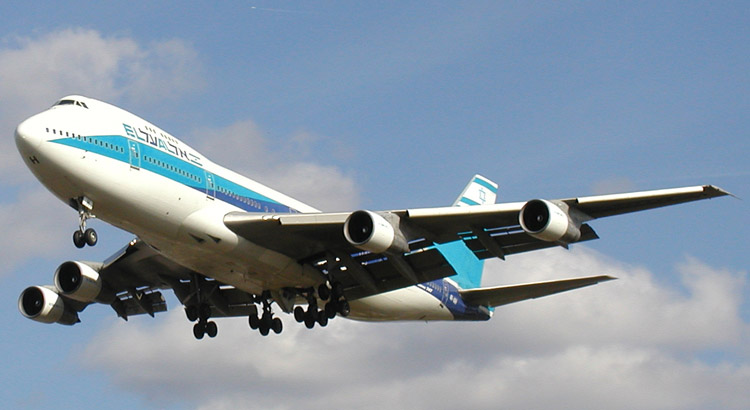
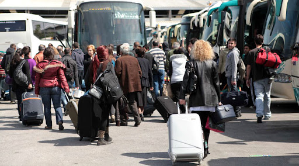
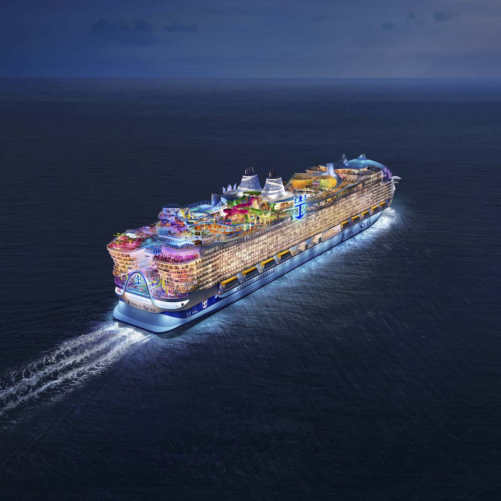

Utazás Görögországba
Utazás Módszerei:
Görögországba való utazás sokféle módon megvalósítható, és számos lehetőség áll az utazók rendelkezésére.
- Repülővel: A leggyorsabb és legkényelmesebb módja annak, hogy eljusson Görögországba.
- Hajóval: Görögország számos tengerparttal rendelkezik, ezért hajóval is könnyen elérhető.
- Autóval: Ha közelebbről érkezik, vagy szeretné felfedezni Görögországot és annak sokféle régióját.
Utazási Tippek:
- Időzítés: A legjobb idő az utazásra Görögországba általában a tavasz és az ősz.
- Repülőjegyek és Szállás: Foglalja le repülőjegyét és szállását előre, különösen a főszezonban.
- Útlevelek és Vízumok: Győződjön meg arról, hogy útlevelének és vízumainak érvényessége megfelelő.
Közlekedés Görögországban:
Görögországban a közlekedés sokféle módon megvalósítható. A tömegközlekedési rendszer jól kiépített, különösen az athéni metró és buszhálózat.

